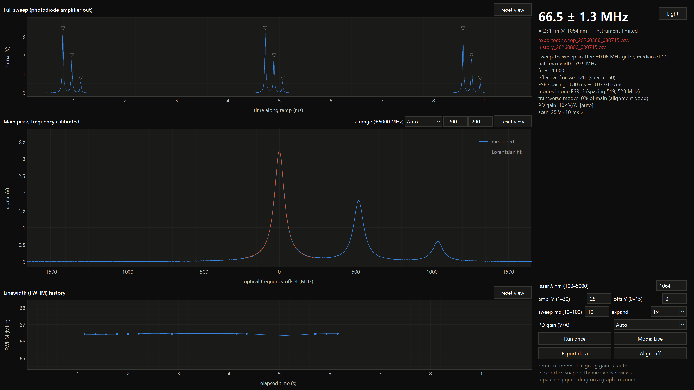

This system measures the linewidth (FWHM) of a continuous-wave laser in real time. A Thorlabs SA210 scanning confocal Fabry-Pérot interferometer sweeps its cavity length with a piezo; every time the cavity passes through resonance with the laser, a transmission peak appears on the built-in photodiode. The SA201B controller generates the piezo ramp and amplifies the photodiode signal; a PicoScope 5242D digitizes it; and the Python application on this PC finds the peaks, calibrates the time axis into optical frequency, fits a Lorentzian to the main peak, and displays the linewidth live — together with its uncertainty, the cavity finesse, mode structure, and a running history. Every sweep is logged to CSV.
| Quantity | Value |
|---|---|
| Free spectral range (FSR) | 10 GHz (SA210 series, confocal, FSR = c/4d) |
| Instrument resolution | ~67 MHz (FSR / finesse, minimum spec finesse 150) |
| Measurable linewidth | ≈67 MHz (instrument floor) up to a few GHz |
| Wavelength range (current cavity, SA210-8B) | 820–1275 nm |
| Digitizer | 15-bit, 2 MS/s default (16-bit in single-channel mode) |
| Update rate (live mode) | one analyzed sweep per ramp, typically 5–10 per second |
| Item | Role |
|---|---|
| Thorlabs SA210-8B scanning Fabry-Pérot (820–1275 nm) | the interferometer; photodiode is built into the head |
| Thorlabs SA201B controller | piezo ramp generator + photodiode transimpedance amplifier; USB-controlled |
| Pico Technology PicoScope 5242D | digitizer (any 5000D-series model works) |
| 3× BNC cables + the SMA→BNC cable shipped with the SA210 | signal wiring |
| Ø1″ kinematic mount (Thorlabs KM100) for the SA210 | tip/tilt alignment |
| Fold mirror (bench: Newport 10DER.2 broadband dielectric) + kinematic mount | beam steering into the cavity |
| f = 100 mm achromatic doublet, AR-coated 400–1100 nm | mode-matching lens (focus at the cavity center) |
| Windows 10/11 PC + monitor | runs this application (dedicated bench PC) |
| From | To | Cable |
|---|---|---|
| SA210 permanently attached cable (piezo) | SA201B rear OUTPUT (0–45 V) | its own BNC |
| SA210 detector SMA connector | SA201B rear PD AMPLIFIER IN (labeled “photocurrent in” on some units — same input) | SMA→BNC (supplied) |
| SA201B front PD AMPLIFIER OUT | PicoScope Channel A | BNC |
| SA201B front TRIGGER OUT (5 V TTL at each ramp start) | PicoScope EXT trigger input | BNC |
| SA201B rear MONITOR OUT (ramp monitor) | PicoScope Channel B (recommended, optional) | BNC |
| SA201B USB-B and PicoScope USB-B | the PC | USB (scope on USB 3) |
--single-channel (the scope then
digitizes at 16 bit instead of 15).Three mains loads (SA201B, PC, monitor) run from one switched power strip mounted at the bench, so the whole station powers up together; the instruments enumerate over USB while the app's startup loop retries for up to a minute (section 3). The PC is dedicated to this instrument and launches the app automatically at logon.
winget install Python.Python.3.12).pip install -r requirements.txt
(installs numpy, scipy, PySide6, pyqtgraph, pyserial, picosdk).ps5000a.dll. The default install path
C:\Program Files\Pico Technology\SDK is what
config.py expects; edit PICO_SDK_LIB there if yours differs.run.bat (or python linewidth_live.py). If your Python
is installed elsewhere, edit the path inside run.bat.shell:startup) launches run.bat at
every logon; the window opens maximized. Delete the shortcut to disable.
| Graph | Shows |
|---|---|
| Full sweep (top) | The photodiode amplifier output across one piezo ramp, in volts vs. milliseconds. Small triangles mark detected peaks. With a 30 V ramp expect the same pattern about 3 times — once per FSR. Use this panel while aligning. |
| Main peak, frequency calibrated (middle) | The same sweep re-plotted in optical frequency offset (MHz) around the analyzed peak, with the Lorentzian fit dashed on top. Several peaks inside one FSR = several longitudinal laser modes; their spacings are listed in the stats panel. |
| Linewidth (FWHM) history (bottom) | Measured FWHM vs. elapsed time. In live mode the last 3 minutes scroll; in single mode every Run once adds one point and old points stay. |
| Control | Function |
|---|---|
| reset view (one per graph) | Restores that graph's automatic ranging after a manual zoom. Bold label = a manual zoom is active. |
| x-range dropdown (graph 2) | Chooses the frequency window of the
calibrated-peak graph: · Auto — follows the fitted linewidth and any neighboring modes. · Full 10 GHz — the whole FSR (−5000…+5000 MHz), every mode of one order at once; useful for spotting half-FSR transverse modes. · Manual — the min/max boxes (MHz, each −5000…+5000, max > min) set the window; typing in either box switches to Manual automatically. The choice persists across sessions. A drag-zoom overrides it temporarily; reset view returns to the selected mode. |
| Control | Function |
|---|---|
| Light / Dark button (top right) | Toggles the color theme (the label names the theme you would switch to). Dark is the default; the choice is persisted. Also key d. |
| Full / Window button (top right) | Toggles full-screen — the window covers the whole monitor with no title bar or taskbar, suiting the dedicated bench display. Also F11; Esc exits. The state is persisted, so a kiosk left in full screen starts in full screen. |
| laser λ nm (100–5000) | The laser wavelength. Feeds the Δλ display (the linewidth in pm/fm), the exported files, the CSV log, and the piezo calibration prior (section 7). Type a value and press Enter. Out-of-range entries are rejected with a message. Persisted. |
| ampl V (1–30) | Piezo ramp amplitude. Rule of thumb on the SA210: ~1 V per GHz of optical span, so 30 V ≈ 3 FSR. Applied to the SA201B over USB in the background (~0.5 s). Persisted. |
| offs V (0–15) | DC offset added to the ramp — slides the whole peak pattern along the sweep. Also nudged by the ←/→ keys (±0.25 V). Persisted. |
| sweep ms (10–100) | Ramp rise time at 1× expansion, snapped to the SA201B's 0–200 step grid. Changing it automatically resizes the scope's capture window. Persisted. |
| expand dropdown | SA201B sweep expansion ×1, ×2, ×5, ×10, ×20, ×50, ×100 — multiplies the sweep time for slow, fine scans. Long sweeps automatically coarsen the sample interval to keep captures manageable. Persisted. |
| PD gain (V/A) dropdown | Auto (default): the app steps the SA201B photodiode amplifier gain down when the 5 V output saturates and up when the tallest peak falls below ~0.35 V, with a 4 s cooldown between steps. 10k / 100k / 1M lock that transimpedance gain manually. The stats panel shows the gain actually in effect. Persisted. |
| Run once | In single mode (switching to it if needed): arms exactly one capture — the sweep is taken, analyzed, displayed, and acquisition stops again. Key r. |
| Mode: Live / Single | Toggles between continuous streaming and single-sweep mode (section 6). Key m. |
| Export data | Writes the currently displayed sweep and the
linewidth history to CSV files in exports\ (section 8.2).
Key e. |
| Align: off / TRI | Toggles alignment mode — triangle scan, peak-height headline, nothing logged (section 4). Key t. |
Headline (large number): the linewidth FWHM in MHz with its 1σ
uncertainty, e.g. 66.5 ± 1.3 MHz. In live mode this is the median of
the last 11 sweeps (spike-free); in single mode it is that sweep's own value.
In Align mode it becomes the peak height in volts.
Subtitle: the same width converted to wavelength units at the current
λ (e.g. = 251 fm @ 1064 nm), plus either
instrument-limited (reading is at the ~67 MHz floor) or an estimated
deconvolved laser width.
Warning area (red): analysis problems (no signal…), signal saturation, scope ADC clipping, controller-write failures, USB disconnects, and missing-trigger conditions appear here and clear automatically.
Stats block, line by line (lines appear only when relevant):
| Line | Meaning |
|---|---|
| single sweep captured HH:MM:SS | timestamp of the last Run once |
| sweep-to-sweep scatter: ±x MHz | MAD-based scatter of recent raw sweeps — a direct measure of laser-cavity jitter (section 7) |
| half-max width | direct width at half maximum, without the Lorentzian fit — a fit-independent cross-check |
| fit R² | goodness of the Lorentzian fit (1.000 = perfect) |
| effective finesse | FSR ÷ measured width; the SA210 spec is >150, so ≥150 confirms the instrument performs to spec |
| FSR spacing | measured peak-repeat period in ms and the resulting calibration slope in GHz/ms |
| modes in one FSR | number of longitudinal laser modes detected, with their spacings in MHz |
| transverse modes: N% | strongest half-FSR peak relative to the main peak — the alignment meter (good < 5% < fair < 20% < poor) |
| PD gain | the transimpedance gain currently in effect ([auto] if chosen automatically) |
| scan: … | current ramp amplitude, sweep time × expansion, offset |
| sweep rate / window | ramps per second and the scope capture window |
| log: session_….csv | the CSV file this session is writing |
| Key | Action | Key | Action |
|---|---|---|---|
| r | Run one sweep (single mode) | e | Export data to CSV |
| m | toggle Live / Single mode | s | snapshot (PNG + raw CSV) |
| t | toggle Align mode | d | dark / light theme |
| g | cycle PD gain manually | v | reset all zoomed views |
| a | toggle auto-gain | p | pause / resume the display |
| ← / → | DC offset ±0.25 V | q | quit (identical to closing the window) |
| F11 | toggle full screen | Esc | exit full screen |
Keys are ignored while the cursor is in an input box.
The scope captures every ramp; each triggered sweep is analyzed and
displayed, the reported linewidth is the rolling median of the last 11
sweeps, and every sweep is appended to the session log. The history graph
scrolls over the last 3 minutes (--history-s to change).
Switch with Mode (m) or start with
--single. The scope is completely idle — no data is acquired
(the PicoScope LED stops flashing) until you press Run once
(r), which arms exactly one capture (or N averaged
sweeps with --avg N). The result freezes on screen; each run adds
one point to the history, and old points never expire. Ideal for documenting
discrete measurements.
Overlay on either mode (t): triangle scan, peak-height headline, live transverse-mode meter, nothing logged. See section 4.
The SA201B sweeps the cavity mirror with a sawtooth; the piezo moves λ/4 of mirror travel per free spectral range. The same laser line therefore re-appears every FSR, and the time between two repeats corresponds to exactly 10 GHz. The app measures that repeat period on every sweep and uses it to convert time to optical frequency — the frequency axis is self-calibrating and assumes nothing about the ramp slope.
Finding the repeat period robustly is the heart of the instrument, because two effects can fool a naive search: the piezo's nonlinearity chirps the peak spacing across the sweep (spacings drift 10–20%), and a misaligned confocal cavity adds odd transverse modes exactly halfway between the fundamentals — a comb at FSR/2 that can look identical to the real one. The algorithm therefore:
cal-fallback in the log).The analyzed peak itself is chosen deterministically — a competitive interior peak nearest the sweep center, sticky to the previously tracked one — because with several near-equal peaks, “the tallest” would be a per-sweep noise lottery.
A Lorentzian is fitted to the analyzed peak; its FWHM in calibrated units
is the linewidth. A single peak transit lasts only ~µs, so each sweep
samples the instantaneous laser-cavity frequency jitter: raw per-sweep widths
scatter by a few percent with occasional outliers. In live mode the app
reports the median of the last 11 sweeps (~1.6 s of data;
--median N to change, --median 1 for raw), which is
spike-free — while the raw value of every sweep is still logged unmodified.
The observed scatter is itself displayed, as it directly measures the jitter.
The headline's ± is a 1σ error combining, in quadrature:
It is recorded in the log and in exported files.
Every launch creates logs\session_YYYYMMDD_HHMMSS.csv (disable with
--no-log). One row per analyzed sweep; align-mode sweeps are excluded.
The file is flushed every ~5 s and closed on exit. Columns:
| Column | Content |
|---|---|
unix_time, iso_time | capture timestamp (epoch seconds; ISO local time) |
linewidth_hz | raw per-sweep fitted FWHM |
linewidth_median_hz | the reported rolling median (live mode) |
linewidth_direct_hz | direct half-maximum width, fit-independent |
deconvolved_hz | measured − 67 MHz instrument function (≥0) |
finesse | effective finesse (FSR ÷ width) |
fsr_period_s, hz_per_s | measured FSR repeat period and calibration slope |
peak_v | tallest peak height in volts |
n_modes | longitudinal modes found in one FSR |
pd_gain_index | 0 / 1 / 2 = 10k / 100k / 1M V/A |
wavelength_nm, linewidth_pm | λ-box value and the width as Δλ in pm |
linewidth_err_hz | the 1σ uncertainty (section 7.4) |
transverse_frac | transverse-mode fraction 0–1 |
flags | ok, or any of saturating /
weak / cal-fallback (semicolon-joined), or the analysis
error message |
Export data (e) writes to exports\:
sweep_YYYYMMDD_HHMMSS.csv — the displayed sweep:
columns time_s, signal_v, freq_offset_mhz, fit_v, preceded by a
# metadata header (export time, λ, FSR, calibration slope, FWHM
in MHz with 1σ, FWHM in wavelength units, finesse, transverse fraction,
PD gain, mode).history_YYYYMMDD_HHMMSS.csv — the linewidth trend:
iso_time, elapsed_s, linewidth_mhz, linewidth_pm.Works in live or single mode; the file names appear in the status area after a successful export.
s saves to logs\: a PNG screenshot
of the whole window (in the active theme) and a raw CSV of the displayed
sweep (time_s, signal_v) — a quick lab-notebook record.
On every exit the app writes settings.json next to the program and
restores it on launch: wavelength, theme, ramp amplitude / offset / sweep time /
expansion, gain choice (auto or fixed index), the graph-2 x-range mode and
manual bounds, and the full-screen state. Precedence at startup:
explicit CLI flag → saved value → built-in default — so a one-off
--wavelength-nm 780 wins for that session without overwriting your
saved setup. Delete settings.json to return to factory defaults.
Nothing physical needs to change. Type the new wavelength into the laser λ nm box and press Enter. This updates:
Then re-align (section 4) — steering and focus are wavelength-dependent.
The current SA210-8B mirrors and photodiode cover 820–1275 nm. For 1550 nm, swap the interferometer head for an SA210-12B (1275–2000 nm). All SA210-series heads share the same 10 GHz FSR and the same connections, so:
1550 in the λ box. Done — no code changes,
no CLI flags; the FSR is unchanged so the calibration works as before,
and the prior scales itself.Other Thorlabs scanning FP series (e.g. the SA200 family, FSR 1.5 GHz, resolution down to ~7.5 MHz) also work. Launch with the cavity's numbers, e.g.:
python linewidth_live.py --fsr-ghz 1.5 --instrument-mhz 7.5
Everything else — calibration, guards, display ranges, the “Full FSR” x-range label — follows those two flags automatically. Check the specific model's datasheet for its FSR, finesse, and wavelength band.
All flags are optional; flags marked (persisted) default to your
last-used in-app value. run.bat passes any arguments through.
| Flag | Meaning |
|---|---|
--single | start in single-sweep mode |
--port COM3 | SA201B COM port (default: autodetect by USB ID) |
--no-controller | don't talk to the SA201B; set the ramp on its touchscreen (pass --rise-ms if not 10 ms) |
--single-channel | MONITOR OUT not wired; photodiode only, 16-bit |
--amplitude 30 | ramp amplitude V, 1–30 (persisted) |
--offset 0 | ramp DC offset V, 0–15 (persisted) |
--risetime-step 0 | sweep-time step 0–200 → 10–100 ms (persisted as sweep ms) |
--sweep-expand 0 | expansion index 0–6 = 1×–100× (persisted) |
--pdgain auto | auto, or fixed index 0/1/2 = 10k/100k/1M V/A (persisted) |
--rise-ms 10 | sweep time when running with --no-controller |
--dt-us 0.5 | target sample interval (0.5 µs ≈ 45 samples across a 67 MHz feature) |
--window-ms | fixed capture window (default: auto from the sweep time) |
--avg 1 | average N triggered sweeps before analysis |
--median 11 | live-mode rolling-median length (1 = report raw sweeps) |
--wavelength-nm 1064 | laser wavelength (persisted) |
--theme dark | dark or light (persisted) |
--fsr-ghz 10 | cavity FSR (SA210 = 10) |
--instrument-mhz 67 | instrument resolution (SA210 spec = 67) |
--history-s 180 | live-mode history window, seconds |
--no-log | disable the session CSV log |
| Symptom | Cause & fix |
|---|---|
| no trigger — is SA201B TRIGGER OUT connected… | The scope's EXT input sees no ramp-start pulse. Check the TRIGGER OUT → EXT BNC and that the ramp is actually running (SA201B screen). |
| no signal — check laser alignment into the SA210 | Triggered sweeps but no peaks above ~0.35 V at any gain: the beam misses the cavity, the laser is off/blocked, or the power is far too low. Re-align (section 4). |
| ! signal saturating | PD amplifier output at the 5 V rail: auto-gain will step down; at 10k V/A already, attenuate the beam. |
| ! scope ADC clipped | The digitizer range clipped a sample; usually accompanies saturation and clears when the level drops. |
| ! SA201B USB disconnected — retrying… | The controller's serial link dropped. Measurement continues (the ramp free-runs); the app reconnects automatically and re-applies amplitude, offset, sweep time, expansion, gain and waveform. Check the USB cable if it persists. |
Startup fails with PICO_NOT_FOUND |
Another program owns the scope (close PicoScope 7), the USB cable
dropped — or a previous process was force-killed mid-capture, which
wedges the driver with a stuck request. In that last case only a
reboot frees the unit. Prevention: always close the app with its
window's ✕ or q; never end it from Task Manager
while it is capturing. The app prints [exit] scope released on
every clean shutdown. |
| App doesn't appear right after power-on | USB enumeration can lag a cold boot; the launcher retries for ~1 min. If it gave up, double-click the desktop icon. |
| Peaks halfway between the main peaks | Odd transverse modes — an alignment/mode-matching indicator, not extra laser modes. Minimize the transverse modes % (section 4). They are automatically excluded from the mode count and calibration. |
| More “modes” than expected, all equal height | Verify the frequency axis before believing it: check that the peak pattern repeats ~once per 10 V of ramp (the SA210's nominal piezo response at 1 µm). Two laser modes spaced near FSR/2 (mod FSR) can mimic a doubled comb — perturb the laser (e.g. pump power): real two-mode beat spacing moves, the piezo's repeat spacing does not. |
| Linewidth reads ≈67 MHz and won't go lower | That's the instrument floor — the laser is narrower than the SA210 can resolve (the subtitle says instrument-limited). The reading is an upper bound. |
| History shows occasional single-sweep spikes in the log | Normal: raw sweeps sample µs-scale jitter (a few % scatter, ~3% of sweeps spike). The reported/displayed median is spike-free; both are in the log (section 8.1). |
logs\session_*.csv files can be archived
or deleted freely; the app never re-reads them.settings.json (next to the
program) to return every persisted control to its default.git pull in
C:\linewidthmeasurement. Every push to the repository runs the
analysis self-test in CI on Python 3.11–3.13.python test_analysis.py verifies the whole
measurement pipeline against a synthetic laser — no hardware needed.| File | Role |
|---|---|
linewidth_live.py | the application (PySide6 + PyQtGraph UI, acquisition thread) |
analysis.py | peak finding, FSR self-calibration, Lorentzian fit, uncertainty |
sa201b.py / pico5000a.py | SA201B serial driver / PicoScope block-mode driver |
capture.py | one-sweep data container |
simulator.py + test_analysis.py | synthetic source + self-test (used by CI) |
config.py | FSR, resolution, piezo prior, ports, themes |
run.bat, icon.ico | launcher (Startup + desktop shortcuts point here) |
logs\, exports\, settings.json | session logs & snapshots, exported CSVs, persisted settings (not in git) |
| Parameter | Value |
|---|---|
| FSR / resolution / finesse (SA210) | 10 GHz / ~67 MHz / >150 |
| Cavity band (current head, SA210-8B) | 820–1275 nm |
| Piezo response (nominal, soft prior only) | ~10 V per FSR at 1064 nm, scales with λ |
| Ramp | 1–30 V, 0–15 V offset, 10–100 ms × 1–100 expansion, sawtooth (triangle in Align) |
| Trigger | SA201B TRIGGER OUT, 5 V TTL, rising edge at 1.5 V on EXT |
| Sampling | 0.5 µs default (2 MS/s); 15-bit two-channel, 16-bit single-channel |
| Capture window | sweep time × 1.25 + 2 ms, auto-tracked via MONITOR OUT |
| PD amplifier gains | 10k / 100k / 1M V/A (SA201B), auto-managed by default |
| Reported value (live) | median of last 11 sweeps, 1σ uncertainty from fit + calibration + median SE |
SA210, SA201B are Thorlabs products; PicoScope is a Pico Technology product — consult their manuals for device-level specifications. This manual documents the measurement application (MIT license) at github.com/alextishinin/linewidth-measurement.